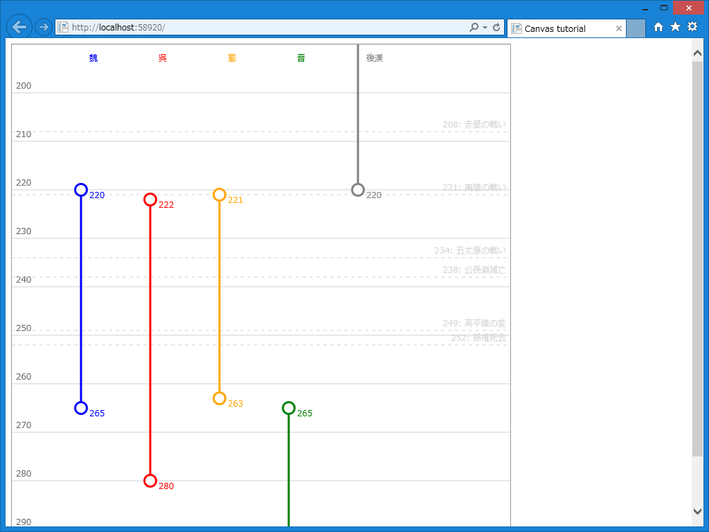

一年ぶり： HTML5 Canvas に挑戦したった。
公開日：
むかし HTML5 Canvas で年表っぽいの作りたいなぁ、って思って一度挑戦したのだけど……すごい、もう一年経ってた。そら、加齢臭も増しますわ。
コーディングは WebMatrix でやったけれど、いまだに JavaScript をいい感じにコンポーネント化するやり方が分かってない(;´･ω･)
前と違うのは縦書きである点だけど、HTML は横に広がるより縦に広がる方が読みやすい気がした。あと、デザイン……センスないのどうやったら改善されるんだろう？
<script src="~/Scripts/Chronology.js"></script> <script> var graph_settings1 = { : }window.onload = function () { chronology('graph', graph_settings1); }; </script>
ってな感じで使える気がする。ロゴ云々はキニシナイデ。最初はそれぞれのアイテムにロゴをもたせて、名前の代わりにロゴをレンダリングしてやろうと思ったのだけど、なんかいろいろ難しくてやめた。
テスト1：三国志の年表

var graph_settings2 = { "begin_year": 190, "end_year": 290, "scale": 5, "margin": 6, "items": [ { "name": "魏", "start": 220, "end": 265, "color": "blue" }, { "name": "呉", "start": 222, "end": 280, "color": "red" }, { "name": "蜀", "start": 221, "end": 263, "color": "orange" }, { "name": "晋", "start": 265, "end": 316, "color": "green" }, { "name": "後漢", "start": 23, "end": 220, "color": "gray" }, ], "events": [ { "name": "黄巾の乱", "year": 184 }, { "name": "赤壁の戦い", "year": 208 }, { "name": "夷陵の戦い", "year": 221 }, { "name": "五丈原の戦い", "year": 234 }, { "name": "高平陵の変", "year": 249 }, { "name": "公孫淵滅亡", "year": 238 }, ] };
テスト2：共和制ローマ末期（紀元前のテスト）

var graph_settings3 = { "begin_year": -120, "end_year": 20, "scale": 5, "margin": 6, "graduation": 20, "items": [ { "name": "キケロ", "start": -107, "end": -43, "color": "blue" }, { "name": "スッラ", "start": -138, "end": -78, "color": "red" }, { "name": "カエサル", "start": -102, "end": -44, "color": "orange" }, { "name": "アントニウス", "start": -83, "end": -30, "color": "green" }, { "name": "アウグストゥス", "start": -63, "end": 14, "color": "gray" }, ], "events": [ { "name": "アクティウムの海戦", "year": -31 }, { "name": "アレシア攻防戦", "year": -51 }, { "name": "同盟市戦争", "year": -90 }, { "name": "スパルタクスの反乱", "year": -73 }, { "name": "ユグルタ戦争", "year": -109 }, ] };
紀元前0年が発生するのは気にしないことにする（ぉ